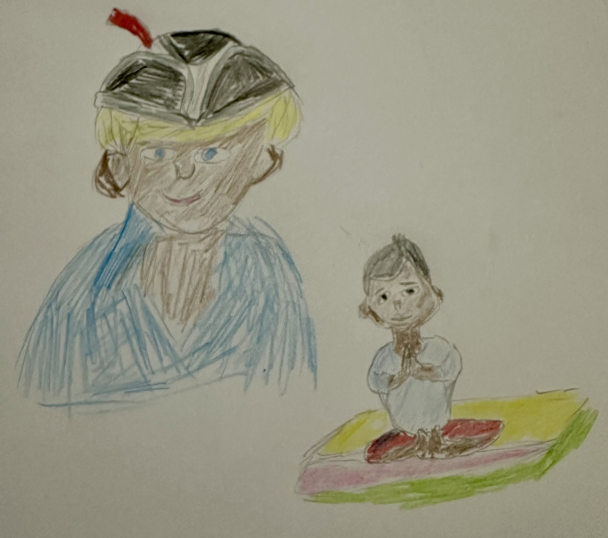

The Ghost Whisper of Christmas
December 19th, 1910
Serrano
There was another side to Serrano, not to the violence and underbelly of crime that lived inside her. Far beyond the fancy marina and pulsating city that was ahead of its time, the mountains, valleys and rich farms. A forgotten land that lay at the end of the desert. One side of the island had prospered; the other side stayed in the past and poverty.
Serrano was famous for its unique marine life and crystal-clear, unpolluted blue water, and its hidden pink and black sand beaches as well as the commonly known beautiful white sand beaches. Our story takes place in a part of Serrano that had sat untouched for centuries and was unknown to locals and tourists. Beyond the prison, the desert was vast and foreboding. Serranoites thought nothing lay beyond the sand of doom and had no idea another standalone society had existed for centuries without their knowledge.
At the edge of the island, far away from the dangerous and frantic streets of Serrano that never slept, the same iconic crystal blue waters met a black sand beach. A working beach unlike the other black sand beaches of the island that were sought out by adventure seekers and holiday makers. A row of archaic fishing huts, whose foundations had been dug into the sand; these shacks had housed families who lived and worked on the beach for generations. The huts and boats were built and maintained from the wood in the forest that lay beyond the beach.
Our story is not about the untouched fishing community that has lived here for generations; it takes place beyond the beach and the forest past the shanty towns. An old stone-built pirate prison sat in the dust between the shanty towns and the most developed homes on this side of the island, where the ruling and higher class of this community lived.
In the prison, a small boy called Prince sat on the cold stone floor of a cell, talking to himself. The boy’s complexion was a beautiful, dark colour like that of carefully crafted mahogany; he was part Italian and part Theosari. A combination of Roman settlers and the indigenous people of the island, he did not inherit the great strength and height that came from this noble bloodline, but his lineage had gifted him more powerful skills.
If you looked deep into Prince’s eyes, you would swear they were black as night, but this was an optical illusion; his eyes were very dark brown, and if you looked closely enough, you would see a slight lightness in his eyes compared to the iris. He was wearing what appeared to be a nightshirt. He had been dragged here by the police, well, the descendants of pirate hunters who now solved local crime in the absence of pirates in 1910.
An enormous man opened a large, warped wooden door and walked down the dusty stone floor towards the little cell at the end of the prison block. He wore a leather tricorn pirate hat on his head. The sun had not long risen, and the light shone through the holes in the stone walls of the cells, reflecting on the uneven stones as his huge leather boots spread dust across the ground as he walked powerfully towards his little friend.
“Prince, did they drag you here and not allow you to get dressed or sleep in your own bed again... You are the one doing them a favour after all...” Captain Jason happily shouted; he didn’t want to show any anger to his friend, as it wasn’t him he was angry at.
Captain Jason was not a pirate hunter by birth; he was a local crime fighter by choice and wore a pirate hat to distinguish himself from the others, as he considered them lazy and ill-equipped for a job he valued and wasn’t his birthright. He was Theosari; he had no ancestry from the ancient Greek or Roman settlers. There were more natural Serranoites in this community than in the bustling metropolis on the other side of the island. He was huge, and his skin was a similar shade to that of his young friend. He wore a white shirt and navy trousers.
No one could remember Prince’s real name; he was an orphan. The name came from him being a direct descendant of the boy who was said to be the heir to Prince Bartholomew centuries ago, an illegitimate child who was born with grace and elegance and was also an orphan. Historians say the boy was better liked and favoured by the people than any of Queen Valdis’s regal grandchildren.
Prince was born with a gift to see his revered ancestor Prince Bartholomew, the Theosari gods and the recently departed souls; hence why he had been dragged out of bed, he made the Pirate hunters’ job easier. He only had the appearance of a boy; Prince was in his early to late twenties. The true age of orphans can often be lost through their early life.
Jason unlocked the tiny cell door and handed Prince a pile of clothes and boots like his but smaller, with a towel and bar of soap sitting on top. He then entered and sat on the small wooden bed that hung from the wall in the cell and waited for his young friend to get ready so that they could visit the crime scene from the night before.
*
**
Jason and Prince were sitting on the floor in the biggest room of a castle made out of black granite that sat on the highest point on this side of the island. They had ridden there on horseback, as no cars existed in this standalone civilisation. The princess lay dead in front of them, killed by a single shot from a flintlock pistol, as with transportation there had not been much advancement in weaponry, as they were sealed off from the rest of the world.
Jason got up, walked outside, closed the door, and left Prince to do his thing. He sat, legs folded; he was very flexible, so his legs sat entirely on the ground.
Prince closed his eyes and chanted, “Princess Maple, show yourself to me. Help me to help you find peace?”
All of a sudden, he opened his eyes, and the princess was sitting in front of him beside her own body. She was glowing white with a fluctuating aura around the outline of her soul that was never the same colour twice.
“Prince, my little darling”. They knew each other, and she thought of him fondly, even though her brothers did not approve of their friendship. The princess helped Prince in his cases and stopped anyone from treating him as a lower-class orphan. She raised him above the station he should have been on and helped to get him work as a ghost whisperer and spirit guide at the top level of this isolated society.
“Maple, what happened to you?” Prince asked while wiping a tear from his left eye.
“I don’t know, little one. I was sitting in my father’s chair; the door opened slightly, some light came in, and everything went black... I did hear a horrible whimper after the bang, but then I was surrounded by a magical array of light... That’s all I remember, my friend.”
*
**
Jason found Prince in the stables after he had spoken with Maple, stroking a colossal, beautiful white horse positioned nose to muzzle, crying.
“Is the horse just Maple now?” Jason asked calmly, putting his right hand on his friend’s neck to calm him down and not spook the horse.
“It’s just a horse; there’s no such thing as shape-shifters. People just think her wild horse was her; she let it roam wild as she did.”
“What did you find out from Maple? I am at a loss; the king is loopy, and Prince Jacob is missing. The other five sons were less than helpful... I mean, Prince, your name will confuse me in this case a little... We should just call them by their names, as they are not even really royalty anyway.
*
**
Prince was sitting cross-legged with his legs flat on the ground in a beautifully carved wooden Viking longhouse. In the furthest corner of the room, his back leaning against a support beam, stood his legendary ancestor Bartholomew eating an apple. Directly in front, towering over him, sitting with his legs crossed, his giant kneecaps banging off each other high in the air as he was not as flexible as Prince, was Lufenity, the Theosari god of war and hunters. His human form was not very human; he had a silver-haired wolf’s head with bright silvery-blue eyes and a seven-foot, extremely muscular human torso. On his shoulder sat a Serrano falcon, and a Serrano wolfhound lay sleeping at his feet. Maple was sitting to Prince’s left. They were deep in discussion, trying to solve Maple’s murder, when the intricately carved wooden room, with every kind of animal you can imagine carved into the walls, beams and furniture. All of the wood burst into flames, and an angry three-headed woman, two of her heads were reptilian, appeared, entering by ascending through the floor. She wore a green dress that was also on fire.
“The Pirate King is dead!” announced Tilya, the Theosari goddess of death, before evaporating and taking all of the fire with her.
“Oh no, not my father!” screamed Maple
*
**
Back in the non-spiritual realm, Prince rose to his feet and scrambled as fast as his little legs could carry him out of his little cell through the back door of the prison and hopped onto a giant white horse and raced up the hill towards the castle. Balda Maple’s loyal horse had been following Prince around like a lost puppy since her tragic demise.
Jason gave chase, unsure why his little partner was in such a hurry; his own horse was less athletic and loyal, and it took him some time to reach the castle and find out what had happened. As he reached the castle gates, Prince was waiting for him outside.
“Sorry I took off the king is dead, and I needed to get here in case Tilya’s soul seekers dragged him into the fires down below. Lucky for us, he wasn’t evil, and he no longer loopy in the spirit realm.”
“That is the one thing that scares me that you have told me. If I die and Tilya or the gods think I’m wicked, I get dragged by my feet into fire by one of her half-lizard flying subordinates.”
“Captain Jason, you are fine; you are the only real and capable crime fighter on the island. You can go hunting with Lufenity and meet your ancestors in the good realm.” Prince laughed as he mocked his large friend and took him by the hand into the great hall where the king lay dead, face first, before his throne.
Prince grabbed both of Jason’s hands and said: “Please do not let go, or you will get stuck here forever”. Jason never understood if that was a joke or a threat.
They sat on the floor, legs crossed, facing each other. Prince closed his eyes and chanted, “Mr King, show yourself to me. Help me to help you find peace?” Part innocence, part cause he didn’t know his friend’s father’s name.
They were standing in the great hall in front of the steps; there was no body, and the king sat on one throne and Maple on the other. He looked a little younger and more alive than he did in his recent talk with Jason after Maple’s death, and he no longer suffered from absent-mindedness from his age.
“I have something to share with you, Jason, and only you. The other crime fighters are not clever enough to solve my daughter’s murder. There was a second bang Maple didn’t hear as she was dead. A bang, horrible whimper, then another bang.” The king had died of natural causes and heartbreak from the loss of Maple; he felt a huge, gentle fist resting on his shoulders. “Lufenity, is that you?” He said before he looked around, and they both disappeared.
Prince and Jason opened their eyes, and they were back in the great hall with the body in their own world again. The king died on December 21st, two days after Maple, and over the next few days his sons started to die in mysterious circumstances, and one by one their souls were dragged to the fires down below. Saur was the first to die; he was found face down in the castle moat as Prince arrived. Tilya’s soul seekers were dragging Maple’s second-youngest brother through a fiery recess in the ground, screaming, “It wasn’t me; it was…” The end of the message was lost to noise. Saur had been pushed or jumped from the battlements of the highest tower of the castle.
Tilya was not like Lufenity; she would not let Prince enter her kingdom or give him counsel or help with his investigations. She was the only one who knew where his powers came from and who his parents were, but would not share the information with anyone, as she believed he was wasting his talents on silly mortals. A foolish child playing god in things he did not understand was what she would roar at him, or similar, more hurtful words depending on her mood. Only if Lufenity, his oversized protector, was not by his side.
Pryme was found in the forest early in the morning of December 23rd; he was drunk and had fallen and been trampled to death by his own horse. Prince did not get there in time, as he died the night before and his soul had already been claimed by the soul seekers. By Christmas Eve, only Guilder, the eldest of the king’s children wereabouts was known. Jacob had not been seen since Maple’s death, and the twins Valary and Tarley were presumed dead; their small sailing boat had been found destroyed in the storm from the previous night on the fishing beach without any bodies, but Prince could not confirm if they had died or had disappeared trying to escape something or someone, as Tilya did not have dominion over the sea. Dolphquary would not help him because the boy could not swim and would not let him teach him.
*
**
The next day, Prince was in the longhouse with Maple and Lufenity, trying to understand the conspiracy around her family and why they were all perishing in unexplainable events. They did not understand whether there was a connection to the deaths or a plot to take out all of the king’s children. The three of them were deep in conversation when, all of a sudden, Bartholomew, who would not normally disturb them, blurted out, “Is that a monkey carrying two bottles of rum?”
As Lufenity’s Serrano wolfhound got up to give chase. Tilya appeared from a hole surrounded by flames and declared to Maple. “Your brother’s souls have been stolen from me?”
The wolfhound returned, carrying in its mouth a scroll the monkey had dropped that read, ‘The monkey has authority to collect my property.’
Lufenity and Tilya simultaneously shouted, “That’s Banito’s monkey.”
Tilya continued, “He knows he is not allowed to leave his kingdom and enter the Theosari netherworld!”
“Technically, he did not; the monkey did...” Lufenity paused as he handed Maple two different wolf-fang necklaces “Put these on your remaining brothers; I sense they are near... They will be under my protection, and that pirate swindler will not be able to touch them till Prince and Jason solve this mystery.”
In the real world, a loud bang was heard before Prince could return. Lufenity announced, “That is, Jacob, go and put the necklace on him, and Guilder is in the castle dungeon. Go quickly before anything further happens.”
Jason opened the door, and standing behind it was Jacob wearing a strange bright red hat with white fur around the bottom and with a furry ball on the end of it.
“Where have you been, boy, and what are you wearing on your head?” Jason asked in a disconcerting tone.
“A fat jolly man outside a toy shop gave it to me”, Jacob said, sounding both happy and sad at the same time.
“What is a toy shop? Never mind, get in here before someone sees you” Jason grabbed the boy gently and pulled him into his office away from prying eyes and whoever was targeting the boy’s family.
Jacob sat in front of Jason with a huge cup of hot cocoa in his cold hands. They both felt a coldness in the room. As a giant man they could not see, had walked directly through the wall and into the room. He had a mischievous monkey on his shoulder and was wearing a huge black frock coat with golden buttons and fancy gold lace stitching on the front, with four rum bottles that had something that looked like colourful clouds floating inside them, hanging from his coat. His tricorne hat was more elegant than Jason’s. He reached out to touch Jacob, but something pushed him back towards the wall.
Lufenity entered the room, following Prince, and this made Banito, the pirate god, vanish. Prince sat down as Jacob was crying and saying, “I killed my beautiful sister; please do what you must; I don’t deserve to live anymore!”
“Jacob, I don’t think you did, and she doesn’t either; something more sinister is afoot,” Prince said as he stood up and made his way to the other side of the table and hugged Jacob and consoled him.
“Where have you been for the last six days?” Prince asked warmly.
Jacob explained that he had crossed the uncrossable desert in two days, and a man in a smelly, powerful wagon that did not need horses to pull it drove him up a mountain and into vast countryside. He had walked for another day, and a man in a device called a car that moved faster than any horse had driven him down the mountain into a city that was too big to see much of and was both dangerous and pretty; he walked into a giant public square that had a bigger tree than all the trees in our forest with lights and coloured ornaments decorating it. He got this hat from a fat drunk man outside a toy shop, and he had gone inside; it had four levels and so many things to play with that were beyond his imagination. He walked around the city, but it was too much for him; he got drunk in a bar and then decided to start walking back and hand himself in for killing Maple.
*
**
Prince and Jason left Lufenity to protect Jacob, who was still in shock from thinking he killed his sister, and he seemed to be delirious from being lost in the desert. As they arrived in the castle dungeon, Guilder was sitting on the steps sobbing, while Maple hovered above him. On the floor, drawn in chalk, was an old pirate ritual that was used to make a deal with Banito for Captain Fearless Friedrich Fenwick gold.
“I didn’t mean to kill her; he tricked me... I just wanted to help my father not be in any more pain and to get the gold... I guess I wanted to be king as well.” Guilder was trying to get everything out before anything else happened. He continued as Prince and Jason sat beside him and listened. “He said the blood had to be spilt by someone innocent, and he had to think he had killed him... I knew Jacob would miss, so I hid with another pistol to finish my father off... After he saw her face and whimpered, it was too late; I had already pulled the trigger, and Jacob ran away, and the demon took my brothers’ souls one by one as he promised if the terms were not met... He tricked me!” Guilder cried into Jason shoulder like a little boy and asked, “Prince, can you fix it? Bring them back. I didn’t mean for Banito to take their souls.”
“You made the deal... I can see what Lufenity can do; we need to take you in for Maple’s murder, even though she forgave you... Your brother can pardon you after his coronation if he wants to, and the necklace Maple put on you will stop Banito; you are under Lufenity’s protection.”
*
**
Later that night, Lufenity had a plan to trick the trickster of the pirate netherworld. Guilder had challenged Banito to a duel on the secret pink sand beach in the cove that had been used by pirates. Before they left, they had gone into the crypt to get a magical item. They did not know where Banito’s body was, but they knew Guilder’s great-great-grandfather had killed him as a man. Not many people knew who he was as a mortal; he was the nefarious Captain Seymour Phillips, who had tricked and killed his closest friend, the legendary pirate Captain Fearless Friedrich Fenwick and stole his gold and hid it somewhere; to this day, no one had found it. Guilder’s great-great-grandfather was Fenwick loyal first mate and took revenge, drugging and stabbing Phillips in the heart before the biggest treasure haul in pirate history could be found. Guilder picked up the dusty cutlass off the tomb and cleaned it up as they headed to the meeting point for the duel.
They arrived at the cove, and the monkey was playing in the beatiful pastal coloured sand, and Banito was waiting with two massive black cutlasses drawn. As Guilder drew the cleaned-up blade that had ended his mortal life, he sensed the trap. “No, no, no, I know that death cutlass, and the boy is still wearing a protection charm like his brother... Frankie, we are leaving without the final souls, but we will be watching you, boy,” he called to his monkey to come back to him.
Frankie was carrying something he had dug out of the sand: a little brown pouch. “What do you have there... Impossible!” He screamed as he opened it, and all of a sudden he was no longer huge and transparent; he was small, weak and mortal.
The rum bottles smashed, and the colourful clouds flew towards Lufenity, and he pointed them towards his longhouse. Bartholomew, who never interfered with the living or any of god’s realms, had had enough of the pirate trickster and had gone to his corpse and taken his lucky jewel bag where he kept his favourite stolen items. The monkey couldn’t resist it, as he hoped. Touching it turned him mortal. Banito threw it away and disappeared before they could kill him and claim his soul.
THE END
